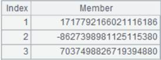

Description:
Get a specified column from an attached table.
Note:
Get the value of column C from attached table T. Its value will be recorded as nulls if the current record doesn¡¯t have column C. If the value of column C corresponds to multiple records, only get the first record.
Parameter:
|
T |
An attached table |
|
C |
A column of the attached table |
Example:
|
|
A |
|
|
1 |
=create(k1,v1).record([1,10,2,20,3,30,4,40,10,100]) |
Create a table sequence
|
|
2 |
=create(k1,k2,v2).record([1,1,"a",2,4,"c",2,8,"b"]) |
Create a table sequence
|
|
3 |
=file("D:/ckv.ctx") |
|
|
4 |
=A3.create(#k1,v1) |
Create the composite table¡¯s base table |
|
5 |
=A4.attach(table2,#k2,v2) |
Add an attached table to the base table |
|
6 |
=A4.append(A1.cursor()) |
Append data to the base table |
|
7 |
=A5.append(A2.cursor()) |
Append data to the attached table |
|
8 |
=A4.cursor(k1,v1,table2.k2,table2.v2).fetch() |
Retrieve columns k1 and v1 from the composite table¡¯s base table, and columns k2 and v2 from attached table table2; record values of k2 and v2 as empty if a record doesn¡¯t have the two fields. Get the first record if there are multiple records in the attached table that correspond to one value  |